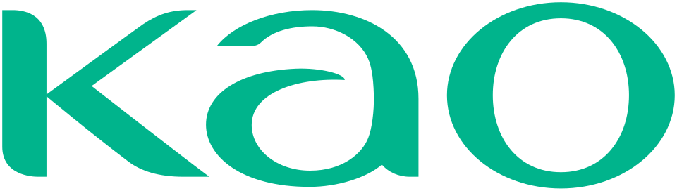

카오 Kao Corporation
카오(Kao Corporation)는 도쿄도 주오구 니혼바시카야바정에 본사를 둔 일본의 화학 기업이다. 가정용·업무용 세제, 화장품, 식품을 제조·판매한다.
최종 업데이트

카오는 어떤 브랜드인가
카오는 가정용과 업무용 세제, 화장품, 식품을 제조·판매하는 일본의 화학 기업이다. 일본을 대표하는 가정용품 제조 업체로 많은 부문에서 높은 점유율을 보이며, 특히 세탁 세제의 점유율은 압도적이다.
화장품 분야의 점유율은 일본 내 2위이며, 가네보 화장품을 100% 자회사로 소유하고 있다. 원료로부터의 일관 생산과 물류·판매 시스템에 강점이 있고, 일본 국내외에 많은 공장과 매장을 두고 있다.
체지방을 에너지로 태우기 쉽게 하는 음료 헬시아 같은 기능계 식품과 애완 동물 용품도 판매하며 높은 수익성을 보인다. 라이온, P&G 재팬, 유니레버 재팬, 시세이도, 선스타 등 일본 내 기업과 경쟁한다.
카오는 어떻게 시작되고 성장했나
1887년 나가세 토미로가 도쿄도 니혼바시 바쿠로쵸에 '나가세 상점'을 창업한 것이 기원이다. 초기에는 비누와 수입 문구 등을 판매했다.
1925년 '카오 비누 주식회사 나가세 상회'가 설립되었고, 1946년 '주식회사 카오'로 개칭했으며, 1954년 카오 비누와 카오 유키가 합병해 새 '카오비누주식회사'가 되었다. 1985년 사명을 '카오 주식회사'로 변경하고 CI를 도입했다.
2006년 1월 화장품 기업 가네보를 인수해 자회사로 삼았고, 이를 통해 화장품업계에서 4위에서 2위로 올라섰다.
카오의 브랜드 아이덴티티는 무엇인가
세탁 세제 점유율이 압도적인 일본의 가정용품 제조 업체로, 세제와 화장품은 물론 식품과 위생 용품까지 아우르며 가네보 화장품을 자회사로 둔 기업이다.
카오의 대표 제품과 서비스는 무엇인가
세제, 화장품, 식품, 위생 용품, 애완용품 등으로 사업이 구성되며, 의류·주방·주택 관리 제품도 포함한다. 화장품 브랜드로 소피나(SOFINA)와 에스트(est)를 두며, 에스트는 백화점 전용 브랜드이다.
의류용 세제 어택은 세계 최초의 컴팩트 세제로 소개되고, 섬유유연제 허밍과 주방용 세제 패밀리도 있다. 위생 용품에는 아기 기저귀 브랜드 메리스(merries)와 여성용 생리대 로리에가 있다.
세안·바디 케어에는 비오레(Biore)와 니베아, 헤어 케어에는 리제(Liese)와 메리트(Merit)가 있고, 청량 음료 헬시아(healthya)도 판매한다.
카오는 지금 어떤 상태인가
가네보 화장품을 100% 자회사로 소유하며, 일본 국내외에 많은 공장과 매장을 두고 있다. 현재 CI는 '자연과 조화를 이루는 풍요로운 매일을 목표로'이다.
일본 내 사업장은 가야바, 스미다, 오사카에 있고, 공장은 사카타, 도치기, 가시마 등에 있다. 해외에도 중국, 홍콩, 대만, 인도네시아, 말레이시아, 싱가포르, 태국, 베트남, 호주, 프랑스, 스페인 등에 관련 회사가 있다.
카오 로고는 어떻게 변해왔나
자주 묻는 질문
카오는 어느 나라 브랜드인가요?
카오는 일본의 뷰티·퍼스널케어 브랜드입니다.
카오는 언제 설립되었나요?
카오는 1940년 설립되었습니다.
카오의 브랜드 아이덴티티는 무엇인가요?
세탁 세제 점유율이 압도적인 일본의 가정용품 제조 업체로, 세제와 화장품은 물론 식품과 위생 용품까지 아우르며 가네보 화장품을 자회사로 둔 기업이다.
카오의 대표 제품은 무엇인가요?
세제, 화장품, 식품, 위생 용품, 애완용품 등으로 사업이 구성되며, 의류·주방·주택 관리 제품도 포함한다.
카오는 어느 기업이 소유하고 있나요?
가네보 화장품을 100% 자회사로 소유하며, 일본 국내외에 많은 공장과 매장을 두고 있다.
카오의 본사는 어디에 있나요?
카오의 본사는 니혼바시카야바초에 있습니다(위키데이터 기준).
카오의 공식 웹사이트는 어디인가요?
카오의 공식 웹사이트는 https://www.kao.com/jp/ 입니다.
출처와 검증
카오 관련 참고: 공식 웹사이트 · 위키데이터 Q902855 · 한국어 위키백과 · 영어 위키백과. 브랜드명은 한글과 원어를 함께 표기하되 데이터에 없는 표기는 만들지 않습니다. 기원 국가·설립연도는 검수된 정의문에서 확인된 값을 우선하고, 없을 때만 공식 웹사이트 URL이 일치하는 위키데이터 개체의 값을 씁니다. 탄생일의 월·일은 위키데이터, 위키백과 정보상자, 본문 가운데 같은 연월로 확인되는 값만 싣고, 출처끼리 다르면 싣지 않습니다. 위키데이터 값은 2026-11-14 기준입니다.